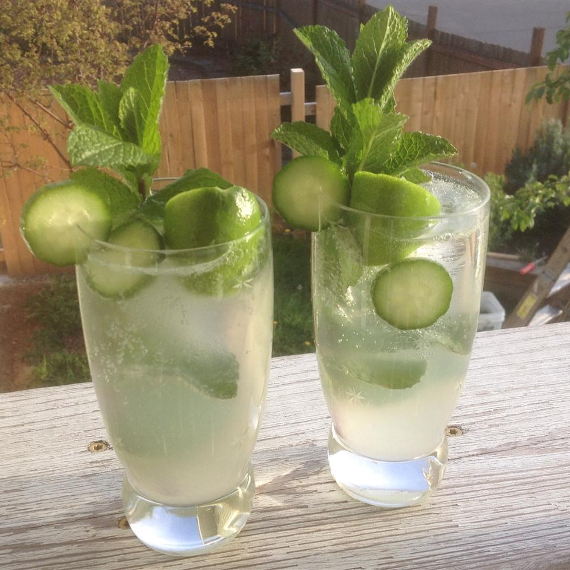

Home
Mint Cucumber Mojitos
Recipe by Wendy Morrow-Kelly

Mint Cucumber Mojitos being served
This drink is perfect after a long day of work or relaxing with some friends. It's
super easy to make and only takes a couple of minutes!
Ingredients
- 1 lime, quartered
- 2 sprigs fresh mint leaves
- 1 tablespoon white sugar
- 2 slices cucumber
- 2 ounces white rum
- 4 fluid ounces club soda
Directions
- Squeeze the lime quarters into a highball glass, and drop the limes into the glass
- Add the mint leaves and sugar
- Muddle well with the back of a spoon or with a muddler
- Place the cucumber slices into the glass and fill with ice cubes
- Pour in the rum then top off with club soda
- Stir gently and serve